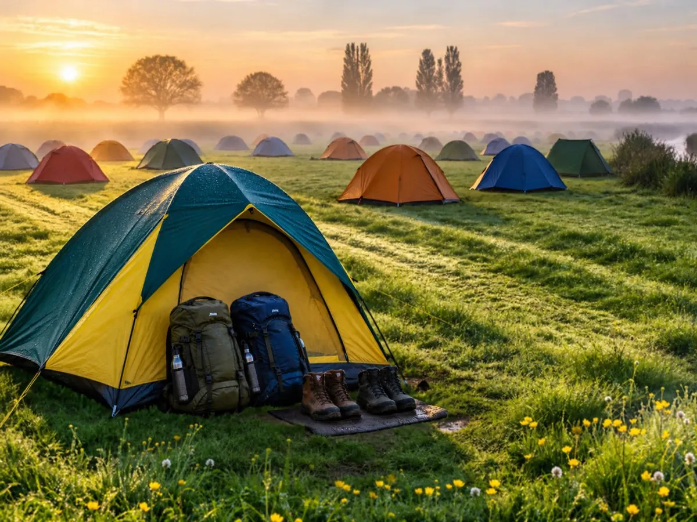

Vierdaagsecamping in Nijmegen: welke kies je?
Bijgewerkt op 22 november 2026.
Tijdens de Vierdaagse in juli zitten de hotels in Nijmegen snel vol. Daarom gaan er elk jaar tijdelijke campings open, speciaal voor lopers, verzorgers en supporters. Ze lijken op elkaar, maar verschillen in ligging, sfeer en wat je erbij kunt huren. Zo kies je de camping die bij jou past.

Zo hebben we gekozen
We lazen in november 2026 de websites van de campings in onze bedrijvengids. De meeste zijn alleen open in de Vierdaagseweek. Voor 2027 zijn nog niet alle data en prijzen bekend, dus kijk op de site van de camping voordat je boekt.
Alleen tijdens de Vierdaagse
De Vierdaagsecamping: je tent staat al klaar
Aan de Griftdijk in Oosterhout duikt elk jaar in juli een pop-upcamping op. Je neemt je eigen tent, caravan of camper mee, of je huurt een tent of wandelaarshut die al voor je is opgezet.
Zo kun je na aankomst meteen uitrusten. Een parkeerticket boek je apart bij. In 2027 is de camping open van zaterdag 17 tot zaterdag 24 juli.
Goed voor: wie geen kampeerspullen heeft.
Vierdaagsecamping De Dennen: hond mag mee
Aan de Dennenstraat staat elk jaar een camping op een sportterrein, vlak bij de bus naar de Wedren. Tijdens de loopdagen rijden er extra vroege bussen, en je blarenpas koop je bij de receptie.
De camping draait op vrijwilligers. Je hond is welkom als je hem aanmeldt en aangelijnd houdt. Parkeren kan tegen betaling.
Goed voor: lopers die met hun hond komen.
Waalcamping: met uitzicht op het kanaal
De Waalcamping is verhuisd en ligt nu op een oud voetbalveld aan de Winkelsteegseweg, met uitzicht op het Maas-Waalkanaal. Je zet er je tent of camper neer.
Naar de Wedren fiets je in ongeveer twintig minuten. De camping is één week per jaar open, alleen rond de Vierdaagse.
Goed voor: wie met de camper komt.
Scouting 4daagsekamp: met wekdienst en voetverzorging
Tijdens de Vierdaagseweek zetten lopers hun tent op bij Scouting Keizer Karel en Scouting Paul Krüger. Er is een wekdienst, EHBO en een voetverzorgingscentrum.
Koken mag je zelf, maar je kunt ook vooraf maaltijden bestellen. De informatie voor 2027 staat vanaf maart op de site.
Goed voor: lopers die het samen gezellig willen hebben.
Vierdaagsecamping DVOL: bij de voetbalclub in Lent
Op sportpark Vossenpels in Lent gaat elk jaar rond de Vierdaagse een camping open bij voetbalvereniging DVOL. Je gebruikt het sanitair van de club, en in de kantine eet je ontbijt en avondeten.
Je boekt alleen voor de hele week.
Goed voor: lopers en supporters die de hele week blijven.
De rest van het jaar
Camping De Grote Altena: aan de Waal in Oosterhout
Net over de rivier bij Nijmegen ligt deze rustige camping aan de Waaldijk. Je zet je tent of caravan op een ruime plek, of kiest een plek direct aan het water.
Geen kampeerspullen? Dan huur je een Waallodge voor vier personen, met twee slaapkamers en uitzicht op de rivier.
Goed voor: een weekend kamperen in de Betuwe.
Meer campings in de omgeving, ook in het bos en de heuvels, lees je in campings in en rond Nijmegen. Ga je kamperen, kijk dan ook even in onze inpaklijst.
Meer in onze gids campings in Nijmegen.
Veelgestelde vragen
Welke campings zijn open tijdens de Vierdaagse?
Onder meer De Vierdaagsecamping aan de Griftdijk, Vierdaagsecamping De Dennen in West, de Waalcamping aan de Winkelsteegseweg, het Scouting 4daagsekamp aan de Sophiaweg en Vierdaagsecamping DVOL in Lent.
Kan ik een tent huren tijdens de Vierdaagse?
Ja, bij De Vierdaagsecamping aan de Griftdijk huur je een tent of wandelaarshut die al voor je is opgezet.
Mag mijn hond mee naar een Vierdaagsecamping?
Bij Vierdaagsecamping De Dennen is je hond welkom als je hem aanmeldt en aangelijnd houdt.
Is er ook een camping die het hele seizoen open is?
Camping De Grote Altena ligt aan de Waaldijk in Oosterhout, net over de rivier, en heeft ook Waallodges.